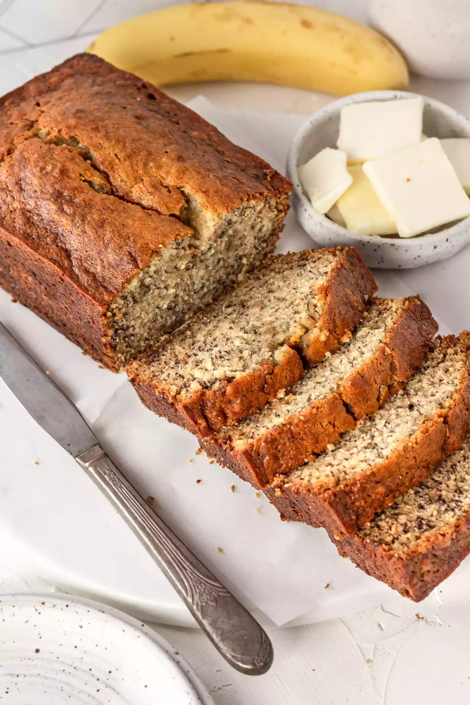

Banana Walnut Bread

Put those ripe bananas to use in the best
banana bread recipe ever. Moist and delicious,
it's easy to make—one bowl, no need for
a mixer!
Ingredients:
- 2 to 3 medium very ripe bananas,
peeled (about 1 1/4 to 1 1/2 cups mashed)
- 1/3 cup (76g) butter, unsalted or salted, melted
- 1/2 teaspoon baking soda
- 1 pinch salt
- 3/4 cup sugar
- 1 large egg, beaten
- 1 teaspoon vanilla extract
- 1 1/2 cups all-purpose flour
Steps:
- Preheat the oven to 350°F (175°C),
and butter an 8 x 4-inch loaf pan.
- In a mixing bowl, mash the ripe bananas
with a fork until completely smooth.
Stir the melted butter into the mashed
bananas.
- Mix in the baking soda and salt.
Stir in the sugar, beaten egg,
and vanilla extract. Mix in the flour.
- Pour the batter into your prepared loaf pan.
Bake for 55 to 65 minutes at 350°F (175°C),
or until a toothpick or wooden skewer inserted
into the center comes out clean.
- Remove from oven and let cool in the pan for
a few minutes. Then remove the banana bread
from the pan and let cool completely before
serving. Slice and serve.